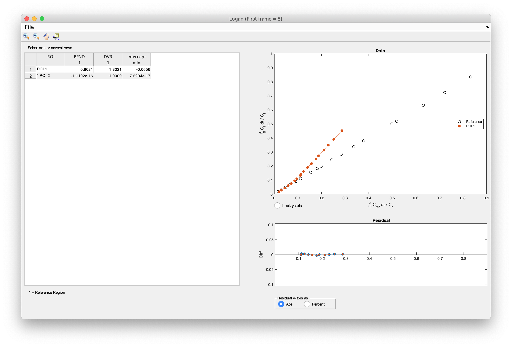
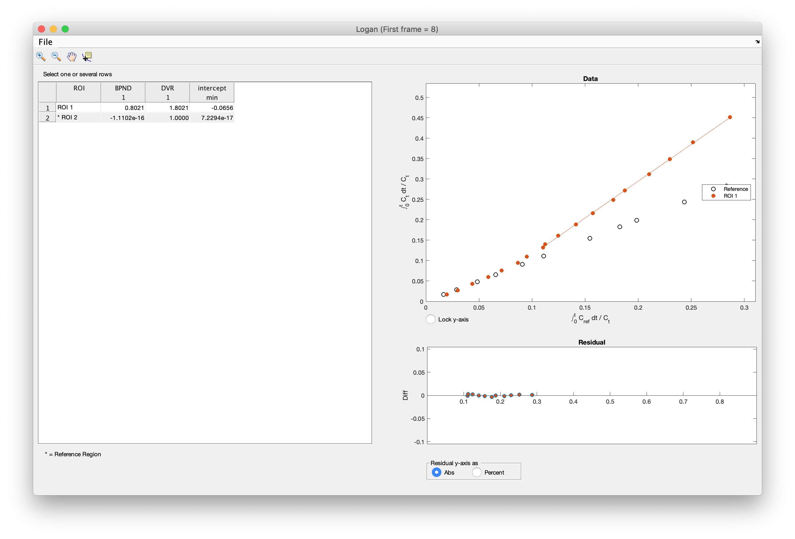

Pharmaco-kinetic models
Jan Axelsson 2019-FEB-14
Table of Contents
Multiple Time Graphical Analysis
Receptor models (= reversible binding)
SRTM – Simplified Reference Tissue Model
SRTM2 – Two-step Simplified Reference Tissue Model
Imlook4d handles a number of pharmaco-kinetic models for dynamic PET scans.
Most of the models described can be calculated for a region-of-interest, or as parametric images (in which each pixel is handled as a region-of-interest). Therefore, in below descriptions, region-of-interest can be read as either region-of-interest or pixel, depending what you wish to calculate.
Models on ROIs are started from the “SCRIPTS/Model on ROIs” menu.
Models on images are started from the “MODELS” menu.
Most of the models are based on reference regions. The assumption is that a reference region very similar to the regions you want to study exists, with the only difference that an uptake mechanism (receptors or other binding) is also present.
In order to calculate a model, a reference region has to be defined.
In imlook4d, the reference region is defined as one region-of-interest (ROI), or a combination of multiple ROIs. First ROIs are drawn, and secondly the user defines which ROIs should be used as a reference region. “Select Reference region” command can be selected from either the “SCRIPTS/Model on ROIs/Select Reference region” menu, or from “MODELS/ Select Reference region” menu. Trying to invoke a model without a defined reference region, will directly open the reference region selection dialog.
This is strictly speaking not a model, but just the ROI, or image, divided by the reference region value.
In the MODEL menu, the selection “No Model” resets the image to show the normal uptake. This is how you get out of displaying parametric images.
Sometimes referred to as graphical methods. Turku PET centre describes this class of methods this way: In these methods, the tracer concentration curves of tissue region-of-interest and arterial plasma are transformed and combined into a single curve that approaches linearity when certain conditions are reached. The data could be plotted in a graph, and line can be fitted to the linear phase.
Examples of such methods are Logan, Zhou, and Patlak plots (see below).
These methods have in common that the start and end of the linear phase has to be defined by the user. Therefore, typically data is analyzed graphically for ROIs (menu “SCRIPTS/Model on ROIs”), and the user makes a guess of start and end frames. Inspecting the curves for the ROIs, the guess can be updated until the line fits the linear part of the curve. Typically the start frame is modified, and the end frame is the last frame of the dynamic scan.


Figure1.
Left), Logan plot for one reference (ROI2) inidicated with
“*”, and one region of interest (ROI1).
Right) the same
graph zoomed in to see that the line fits the linear phase of the
curve of the region of interest.
The following models are implemented both for ROIs, and for making model images (parametric images). The models calculate non-displaceable Binding Potential, BPND , which is a combined measure of available receptor density Bavail and affinity 1/KD. BPND = Bavail / KD. Many of the models gives additional parameters, at the cost of robustness especially for model images. Therefore, the choice of model is dependent on data quality and what parameters are of interest.
This model calculates the so called
non-displaceable Binding Potential, BPND,
using a reference region. For most tracers, cerebellum is devoid of
receptors and used as a reference region. Calculates:
-
BPND
Input parameters are:
-
start frame (see Multiple Time Graphical Analysis above, on how to
determine start frame)
- end frame
- k2p
transport from free to plasma, which for some tracers (for instance
raclopride) can be ignored by leaving this field blank
(value 0
is not allowed).
This is another implementation of reference
Logan, which is more robust to noise. Calculates:
-
BPND
Input parameters are:
-
start frame (see Multiple Time Graphical Analysis above, on how to
determine start frame)
- end frame
Zhou is preferred
over Logan for model images, since it is more robust on noisy data.
See https://doi.org/10.1016/j.neuroimage.2008.09.021
assumes, that
mathematically, the kinetics of the receptor region and the region
of interest is described by the same equation (kinetics not
distinguishable). SRTM model calculates the following parameters:
- BPND
- R1
= K1/K1ref accounting
for difference in delivery for region and reference region
- k2
transport from free to plasma in region of interest
- k2p
transport from free to plasma from reference region
in
addition the following parameter, used in the calculation, is
reported:
- k2a apparent (overall) rate constant for
transfer from specific compartment to plasma. This comes from the
assumption of kinetics being hard to distinguish between reference
region and region of interest.
No input parameters
asked for.
See https://doi.org/10.1006/nimg.1996.0066
Same assumptions as in SRTM, with addition that k2p is set
constant in whole brain. This model calculates the following
parameters:
- BPND
- R1
= K1/K1ref accounting
for difference in delivery to region and reference region or
pixel
Input parameter:
- k2p
from SRTM. Constant value for whole brain (or representative regions
of interest), calculated using SRTM for brain outside reference
region
SRTM2 is preferred over SRTM for model images,
since it is more robust.
See
https://doi.org/10.1097/01.WCB.0000033967.83623.34
This
reference describes the SRTM2
model
as:
1.
Use SRTM to calculate R1, k2, and k2p
for all brain voxels. Calculate a global k2p
from all pixels outside the reference region.
2. Fix k2p
to the global value and calculate functional images of BP and R1
(using
the SRTM2 function in imlook4d – my comment)
The
conditions may be a pharmacological challenge, or a task switch at
time T0
within
the same scan. Assumes that all parameters except BP are constant
over the whole scan, and that BP changes from constant level BPND0
to BPND1
at time T0.
-
dBP
Binding
potential difference
= BPND1
-
BPND0
-
BPND0
Binding
potential before T0
-
BPND1
Binding
potential after T0
-
R1
= K1/K1ref
accounting for difference in delivery for region and reference
region
- k2
transport from free to plasma in region of interest
- k2p
transport from free to plasma from reference region
Input
parameter:
- Frame
number, at which the change in condition occurs. An experiment is
ideally designed so that the change occurs exactly between two
frames, so the frame number is the first frame starting at time
T0.
in
addition the following parameter, used in the calculation, are
reported:
- k2a,
k2b
apparent (overall) rate constant for transfer from specific
compartment to plasma
before T0
(k2a)
and after T0
(k2b).
This comes from the assumption of kinetics being hard to distinguish
between reference region and region of interest.
See
https://doi.org/10.1016/j.neuroimage.2006.06.038
builds on the
notion that after a while the blood plasma activity changes slowly,
and the reversible compartments have reached a steady-state
equilibrium with plasma (reversible compartments activity will be
proportional to the plasma activity). This way the blood and the
irreversible compartments can be viewed as an input function, with a
single irreversible compartment constantly accumulating activity.
The Patlak model calculates:
- Ki the
net transfer rate (or influx constant) to bound state
Input
parameter:
- Variable name, containing the time-activity curve
of the intact tracer molecule sampled from blood plasma.
Note
1: The time-points for the plasma time-activity curve should be the
same as the time frames in the PET data.
Note 2: The plasma
time-activity curve should be of intact tracer molecules. This means
that if the tracer is metabolized,
and one of the metabolites
are radioactive, advanced metabolite measurements and corrections
have to be performed.
See
https://doi.org/10.1038%2Fjcbfm.1985.87,
http://www.turkupetcentre.net/petanalysis/model_patlak_interpretation.html
uses exactly the
same principle as Patlak model above, but requires a reference
tissue that does not display irreversible trapping. The most common
tracer, FDG does not fulfil this requirement.
The Reference
Patlak model calculates:
- Ki the
net transfer rate (or influx constant)
No input
parameters asked for.
See
https://doi.org/10.1038%2Fjcbfm.1985.87
is
not an absolute tissue-perfusion model, but calculates
values relative the
whole brain (which
should be the reference region).
This
model calculates:
- Perfusion
No
input parameters asked for.
See
https://doi.org/10.1177/0271678X17730654